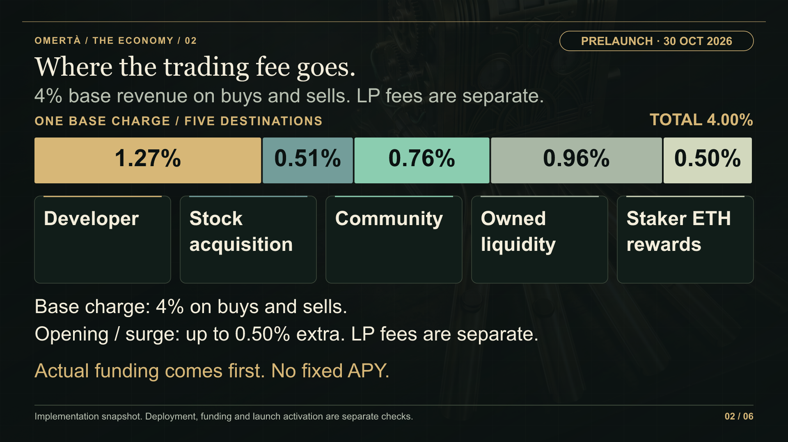
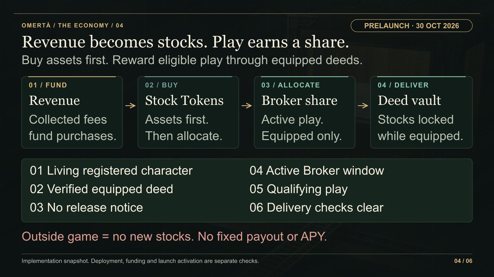

02 / 06
Where the trading fee goes.
4% base revenue on buys and sells. LP fees are separate.

Text alternative
The 4 percent base trading revenue is divided into developer 1.27 percent, stock acquisition 0.51 percent, community 0.76 percent, protocol-owned liquidity 0.96 percent and staker ETH rewards 0.50 percent of the raw fee basis. Up to 0.50 percent additional opening or surge charge and separate LP fees may apply. No fixed APY is promised.
04 / 06
Revenue becomes stocks. Play earns a share.
Buy assets first. Reward eligible play through equipped deeds.

Text alternative
Trading revenue funds treasury stock purchases. Approved acquired Stock Token units are allocated to eligible Brokers through activity weights. Delivery is to the canonical ERC-6551 account of an equipped deed. Eligibility requires a living registered character, finalized equipment, active Broker window, qualifying activity, no release notice and live delivery checks. A wallet-held NFT, pending equipment or dead-character custody does not qualify.
05 / 06
Fixed supply. Funded payouts. Real exposure.
Funded rewards move assets. They do not mint new OMR.
![The current OMR contract initially mints 100 million tokens to the treasury Safe. Funded inventory supplies payouts without reward minting. Deed supply is 2,500 permanent identities: 1,000 gameplay-earned, 1,000 paid and 500 partnership. Burning or trading does not replenish primary supply. Gameplay death can take 50 percent of loose or unbonding OMR and 20 percent of staked OMR; unbonding lasts six hours. Separate ETH staking uses 30-day per-deposit locks and variable funded ETH rewards. No fixed APY is promised.](token-supply.png)
Text alternative
The current OMR contract initially mints 100 million tokens to the treasury Safe. Funded inventory supplies payouts without reward minting. Deed supply is 2,500 permanent identities: 1,000 gameplay-earned, 1,000 paid and 500 partnership. Burning or trading does not replenish primary supply. Gameplay death can take 50 percent of loose or unbonding OMR and 20 percent of staked OMR; unbonding lasts six hours. Separate ETH staking uses 30-day per-deposit locks and variable funded ETH rewards. No fixed APY is promised.
06 / 06
The standards behind the street.
Separate standards. Separate rights. Constrained custody.

Text alternative
DynastyNFT is a permanently soulbound ERC-721 with ERC-5192. StreetDeed is transferable ERC-721 with custom owner transfer locks. Character custody is a restricted per-life escrow rather than a generic identity wallet. The deed stock vault is a constrained ERC-6551 account holding ERC-20s. Extracted supported gear, cars and boats use ERC-1155 variants. OMR uses ERC-20 plus permit. EIP-712 signs typed authorizations, and ordinary inventory is not automatically an NFT.